O jogo agora começa numa tempestade: a visão fecha em ~7 tiles (4 na rajada), as máquinas abrem a vista em volta da
base e, no Árido, a poeira afina em 20 s e o céu limpa. O chão continua sendo o dead de hoje. Tudo abaixo é pixel de
verdade: o jogo rodando (mundo + HUD B2, capturados com o storm_capture.py) com a camada de poeira montada do jeito que eu proponho pro Dev C.
assets/sprites/_pending/storm/.dead. O círculo de visão aparece como uma clareira (chão escuro e nítido dentro da névoa clara), e não como um holofote. O Explorador (visor dourado, acento laranja) e as máquinas ficam no limpo, então ficam 100% legíveis; a HUD B2 fica por cima, sem perder nada.#a8694afundo da camada#9c6045escuro#a8694amédio = fundo#b47553claro#cf9a70claro 60%#efcba0brilho 15%#6e3f2bescuro 25%#dcab80faixa de ventoFerrugem: a poeira é o próprio chão levantado. Névoa mais clara e menos saturada que o chão dead, então o círculo de visão (chão escuro) se destaca sem brigar com o vermelho do planeta. Na saída pro Árido a cor quase não muda: só abre. Grãos claros e faixas bem visíveis.
#ad875ffundo da camada#a17d57escuro#ad875fmédio = fundo#b9936aclaro#d8b585claro 60%#f3e0b6brilho 15%#74553aescuro 25%#e4c797faixa de ventoOcre: cara clássica de tempestade de areia. É a de maior contraste (névoa amarela × chão vermelho), a borda da visão fica óbvia e a saída pro Árido vira um momento bem marcante (o mundo "fica vermelho"). Contra: o planeta parece amarelo nos primeiros minutos, e o dourado do Ti/visor some um pouco no anel de fora.
#6e443cfundo da camada#643d37escuro#6e443cmédio = fundo#7a4d44claro#a87260claro 60%#d8a585brilho 15%#43262aescuro 25%#bc8670faixa de ventoCrepúsculo: sépia escura e opressiva, mais clima de perigo. Contra: o contraste com o chão é baixo (a visão parece "um holofote" e não uma clareira), os grãos quase somem e fica com cara de noite, que é outra coisa.
O jogo real, no zoom 1× e com a HUD B2 no tamanho Média (o padrão). O painel do Ti e o objetivo já mostram o Marco 1 ("ÁRIDO", "Sobreviva e monte a base"), e o aviso RAJADA é o mockup do que a trilha B vai desenhar. O chiado do minimapa é ilustrativo (quem faz é a C3 do Dev C).
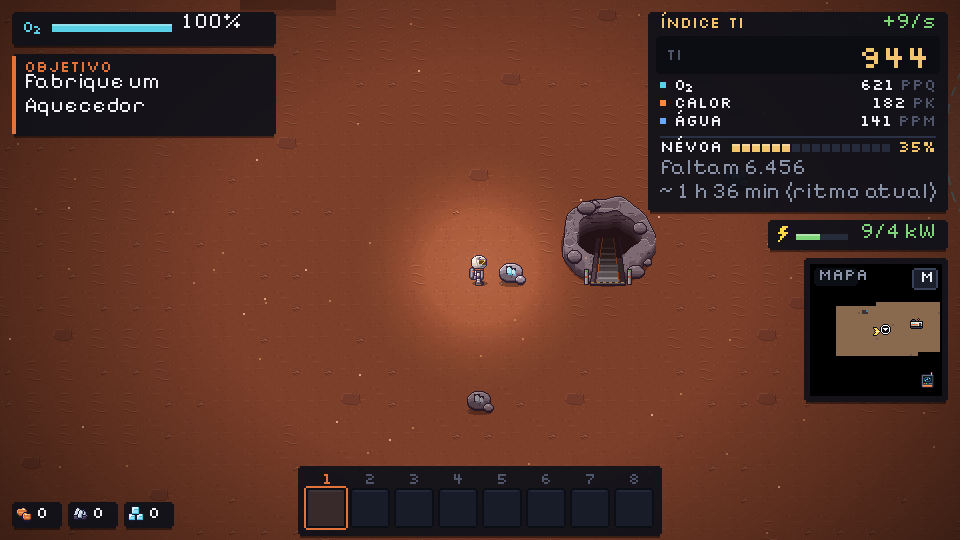
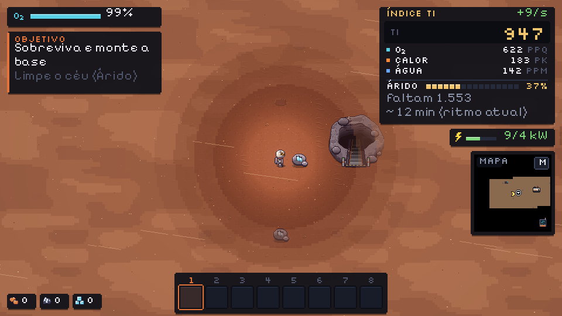
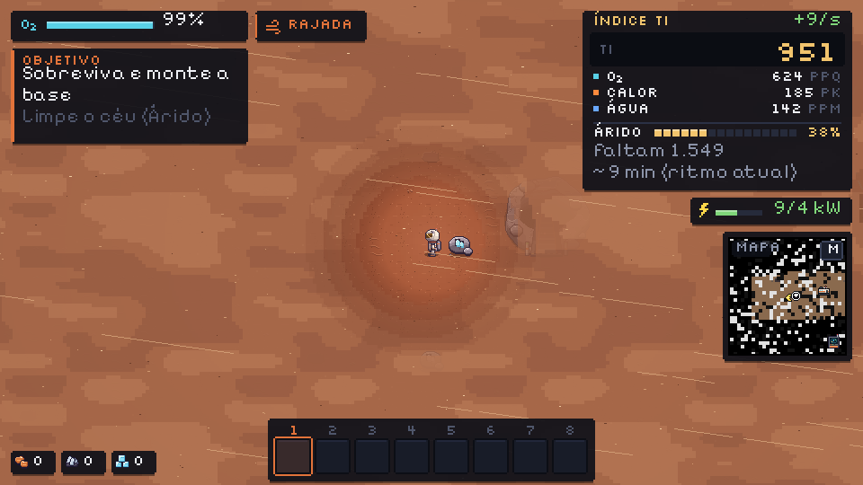
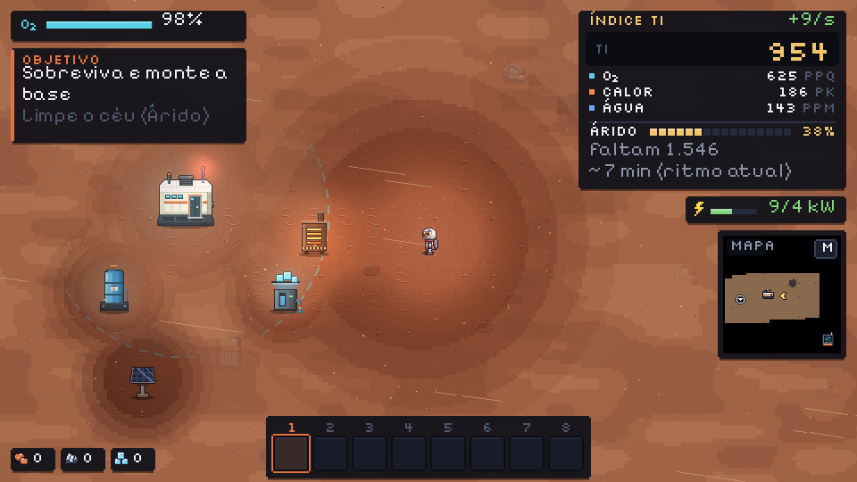
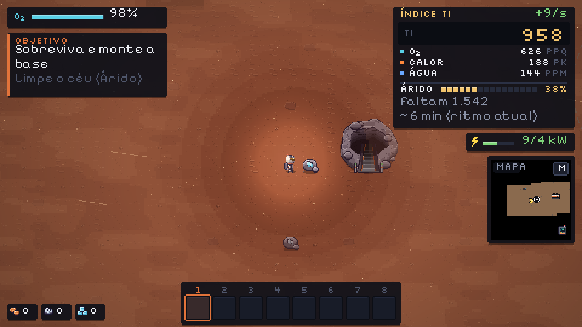
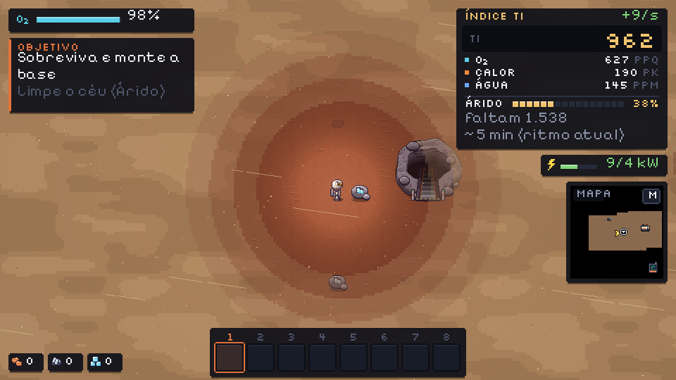
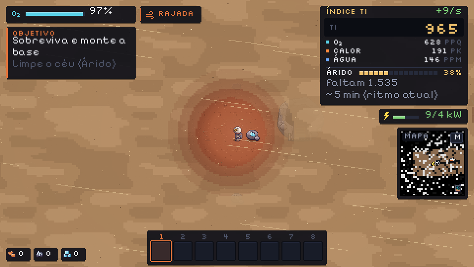
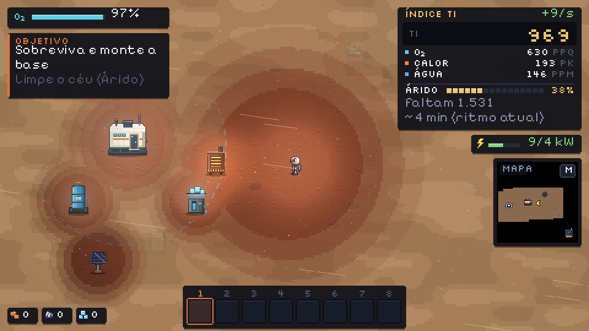
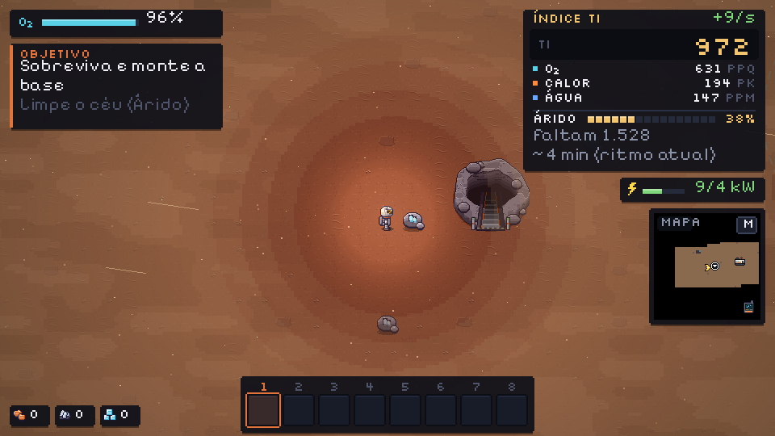
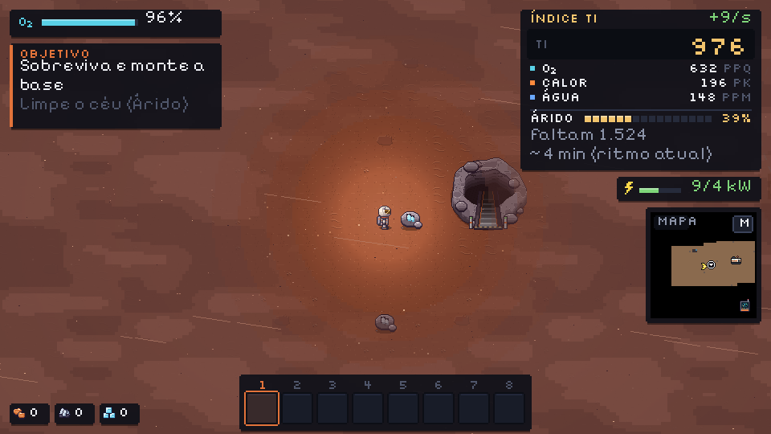
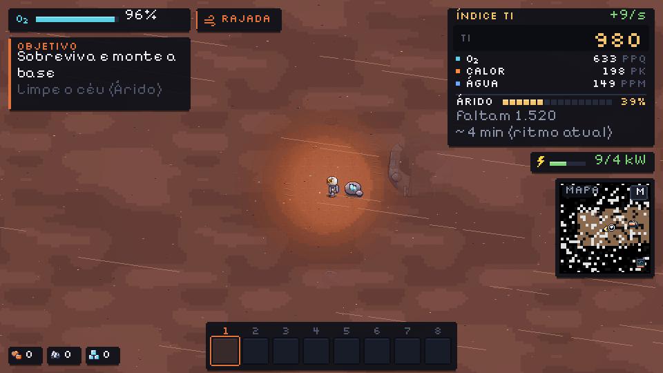
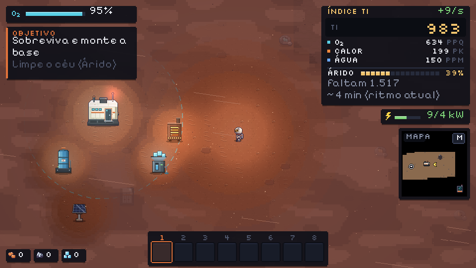
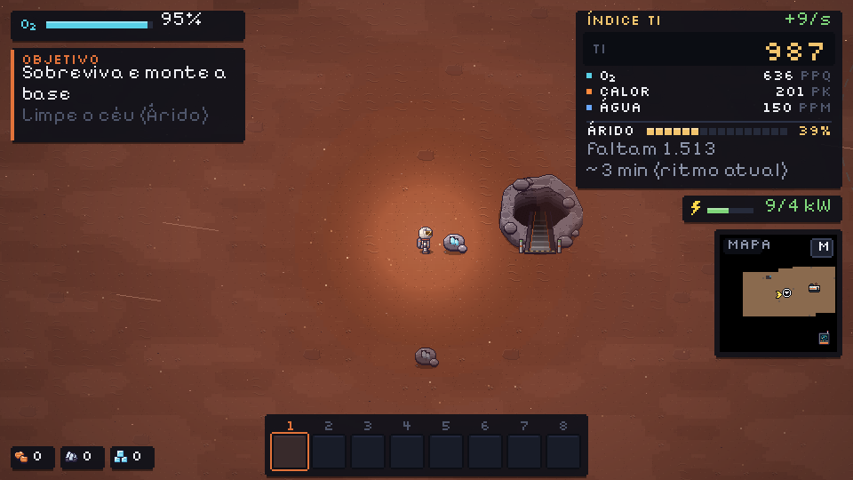
Animação em CSS por cima da cena parada: as faixas e os grãos andando com o vento (leste, 8° pra baixo) na velocidade proposta. Na rajada fica tudo mais rápido, mais denso e mais comprido.
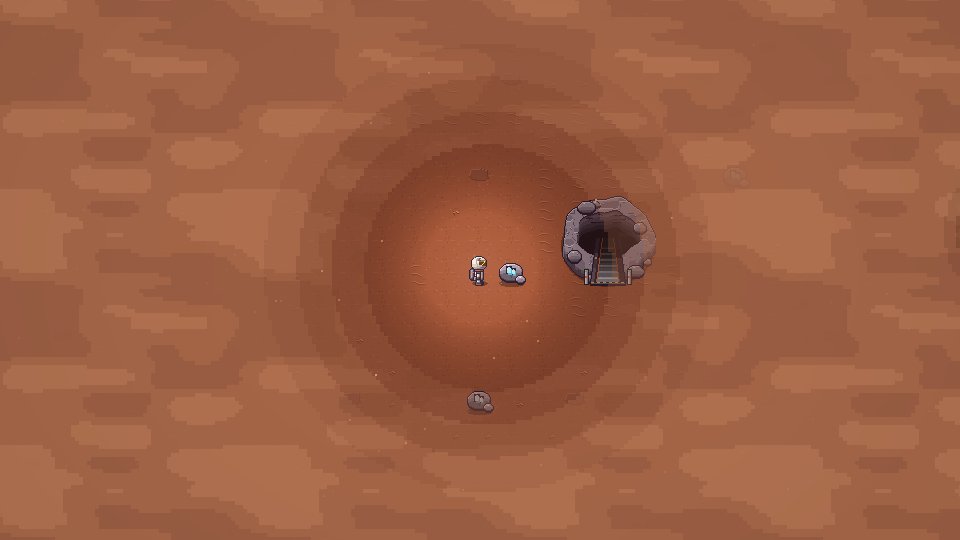
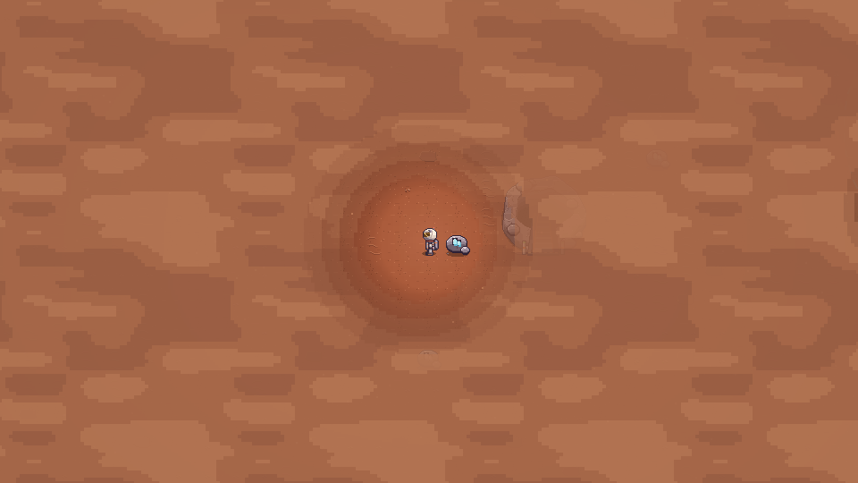
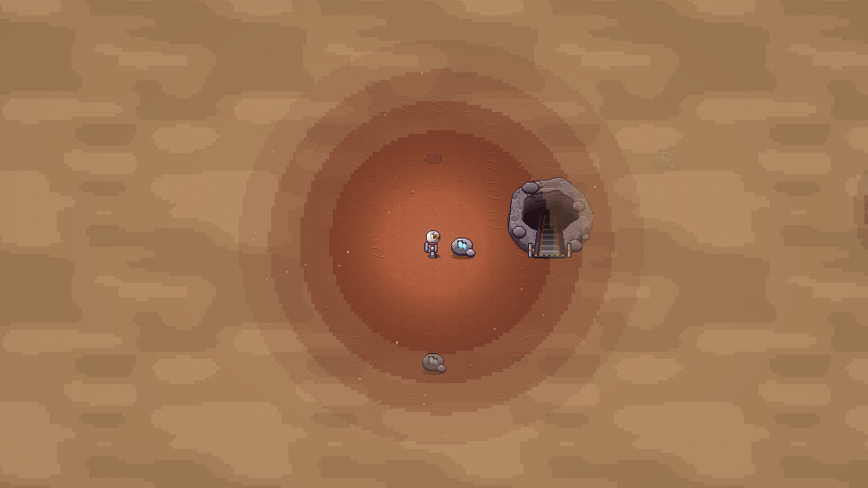
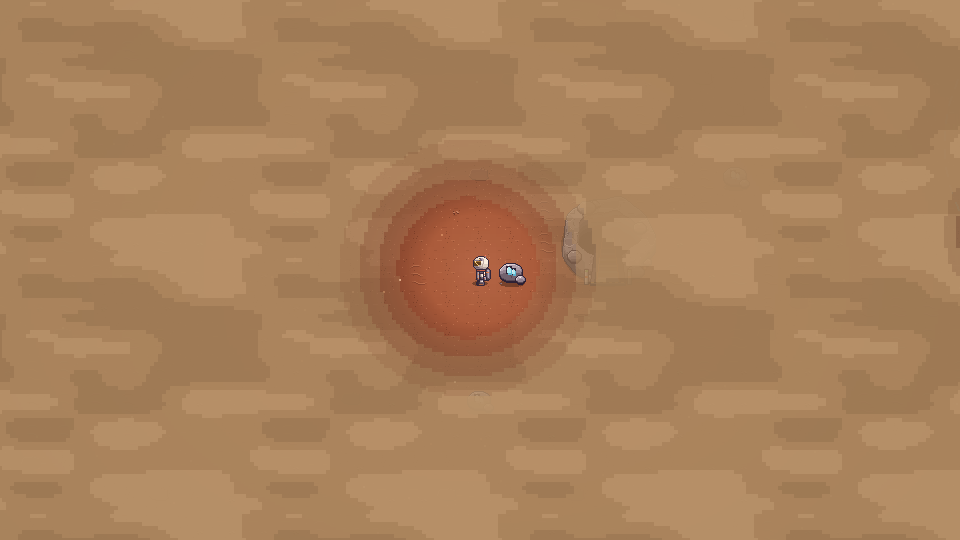
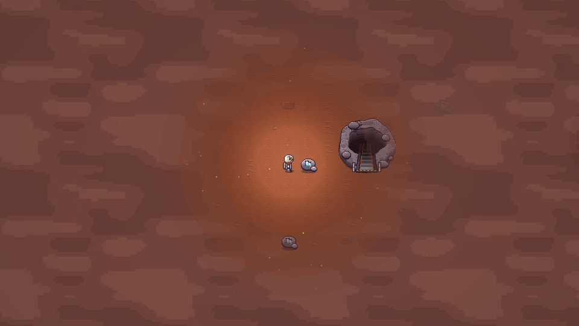
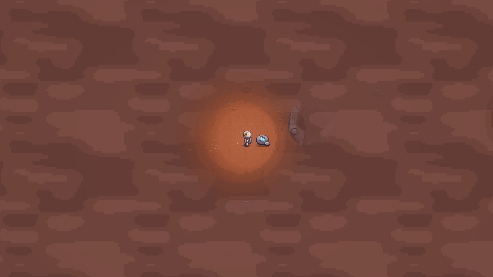
dust_cloud_{a,b,c}.png · 256×256 · emenda nos 4 lados · 3 tons · blocos de 4 px (a célula do Lighting) · opaca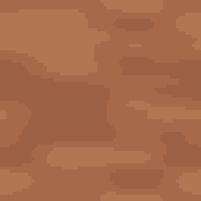
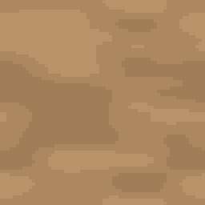
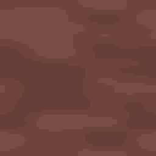
Opcional: sem a textura, o Dev pinta a camada com a cor de fundo chapada e o resultado fica parecido, só menos "vivo". A nuvem dá a sensação de rajadas de pó passando.
dust_streaks_{a,b,c}.png · 128×8 · 4 faixas de 1 px · cabeça clara à direita · opcional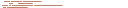
Servem se o vento for quase horizontal. Como o vento varia de direção, eu recomendo desenhar as faixas em código (linha de 1 px na direção do vento, receita abaixo): fica pixel certinho em qualquer ângulo e não precisa girar sprite.
hud_wind.png · 8×8 px da UI (16×16 na tela) · uma cor · mesmo esquema do raio da energia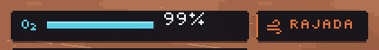
| O quê | Valor |
|---|---|
| Cor do fundo (sem textura) | #a8694a (troca o chute #8a5a3c do plano) |
| Textura da nuvem | dust_cloud_a.png ladrilhada presa no mundo (offset = câmera) + deriva do vento de 40 px/s (×2,5 na rajada), em px inteiro |
| Opacidade | storm × min(1, 0.9 + 0.06 × gust), aplicada com set_alpha na camada inteira |
| Visão | player 7 tiles (rajada 4), centro em (p.x, p.y − 18) + 10 px pra onde ele olha. Cápsula 3.5 tiles em (POD_ANCHOR.x, POD_ANCHOR.y − 24). Cada máquina 2.5 tiles em (tx·32+16, ty·32+8); o baú não abre (não tem luz). Várias fontes juntas: vale a mais limpa (MIN), não soma. |
| Anéis da visão (poeira em cada distância relativa) | até 55% do raio: 0% · até 70% do raio: 30% · até 85% do raio: 60% · até 100% do raio: 85% · fora: 100%. Células de 4 px com a grade presa no mundo (igual ao Lighting) |
| Grãos | 200 (rajada 250, teto do plano) × storm · pixels opacos · 1×1 (70%) ou 2×1 (30%), na rajada metade ganha +1 px de comprimento · cores #cf9a70, #efcba0, #6e3f2b (claro 60%, brilho 15%, escuro 25%) · velocidade 260 px/s × (0,6 a 1,4) × (1 + 0,7·gust) na direção do vento, com balanço vertical de ±3 px (sin(2t + i)) |
| Faixas | 14 (rajada 30) × storm · linha de 1 px na direção do vento (pygame.draw.line) · comprimento 40 a 120 px × (1 + 0,6·gust) · metade quebrada em 2 pedaços (corte em 20–45% do comprimento, vão de 8%) · cor #dcab80 · desenhadas opacas numa camada com colorkey e coladas com um alfa fixo: 140 (rajada 180) · velocidade 380 px/s × (0,8 a 1,2) × (1 + 0,8·gust) |
| Vento | dominante pro leste, 8° pra baixo (sem weather), com variação lenta de ±15° vinda do weather.wind |
| Transição pro Árido | basta o storm descer: a opacidade, os grãos e as faixas caem juntos (ver "storm 0,5" nos mockups). Opcional: o raio de visão cresce de 7 até 14 tiles enquanto storm cai, pra clareira "abrir" junto |
| Aviso RAJADA (trilha B) | pílula hud_panel(142, 6, 8+8+4+largura("RAJADA")+6, 17) (logo à direita do O₂) · barrinha de 1 px C_ACCENT em (x, y+2, 1, 13) · ícone 8×8 em (x+6, y+5) na cor C_ACCENT #e2733a · texto "RAJADA" em (x+18, y+1), self.font, C_ACCENT. Pode piscar nos primeiros 0,6 s |
| Chiado do minimapa (C3, ilustrativo) | no mockup: 10%×amount dos pixels em blocos 2×2, metade (225,225,225) e metade (18,18,18), mais 2 linhas de 2 px (200,200,200) |
chão → veios → paredes e objetos → partículas de hoje → draw_lighting/draw_atmosphere do dead (fica como está, por baixo) → camada de poeira → faixas → grãos → status das máquinas (por cima, como no escuro da caverna) → HUD. Na caverna não desenha nada. Com storm == 0, custo zero.
draw_bolt)WIND = [
"....##..",
"...#..#.",
"......#.",
"######..",
"........",
"#######.",
".......#",
".....##.",
]
É a DustMock do tools/sprites/storm_capture.py, que gerou todos os mockups. Medida: ~1,5 ms a camada e ~2,5 ms com grãos e faixas (960×540, sem janela). Dá pra ganhar reaproveitando as surfaces entre quadros.
# 1. máscara pequena: 1 px = 1 célula de 4 px, grade presa no mundo; começa toda opaca
ox, oy = -int(cam_x % 4), -int(cam_y % 4)
mask = Surface((sw, sh), SRCALPHA); mask.fill((255, 255, 255, 255))
# 2. cada fonte de visão carimba um "buraco" (branco, alfa = poeira do anel; em cache por raio)
for x, y, radius in fontes:
r = round(radius / 4); gx, gy = int((x - cam_x - ox) // 4), int((y - cam_y - oy) // 4)
mask.blit(hole(r), (gx - r, gy - r), special_flags=BLEND_RGBA_MIN)
# 3. estica 4× sem suavizar
big = transform.scale(mask, (sw * 4, sh * 4))
# 4. nuvem ladrilhada (presa no mundo + deriva) e a máscara por cima
dust = Surface(big.get_size(), SRCALPHA)
for ...: dust.blit(cloud, (tx, ty))
dust.blit(big, (0, 0), special_flags=BLEND_RGBA_MULT)
dust.set_alpha(round(255 * storm * min(1, 0.90 + 0.06 * gust)))
canvas.blit(dust, (ox, oy))
# 5. faixas (camada com colorkey + set_alpha fixo) e grãos (fill opaco), depois a HUD
| Arquivo | Tamanho | Uso |
|---|---|---|
_pending/storm/dust_cloud_{a,b,c}.png | 256×256 | nuvem da camada (a escolhida vira dust_cloud.png), opaca, emenda |
_pending/storm/dust_streaks_{a,b,c}.png | 128×8 | opcional: faixas prontas (1 px de altura, linhas y = 1, 3, 5, 7; comprimentos 42, 33, 63, 28) |
_pending/storm/hud_wind.png | 8×8 | ícone do aviso RAJADA (px da UI), alfa 0/255 |
_pending/storm/storm_palettes.json | · | as 3 paletas em hex e a grade do ícone |
Nada disso está no contrato do §6 ainda: depois que o dono escolher, proponho entrar dust_cloud.png (256×256) e hud_wind.png (8×8) no contrato, ou só o ícone se o Dev preferir a cor chapada.
python3 tools/sprites/storm_art.py # paletas, nuvem, faixas e ícone uv run python tools/sprites/storm_capture.py # mockups (jogo de verdade, sem janela) python3 tools/sprites/storm_report.py # este report
Tudo determinístico: rodar de novo dá os mesmos PNGs (md5 conferido).